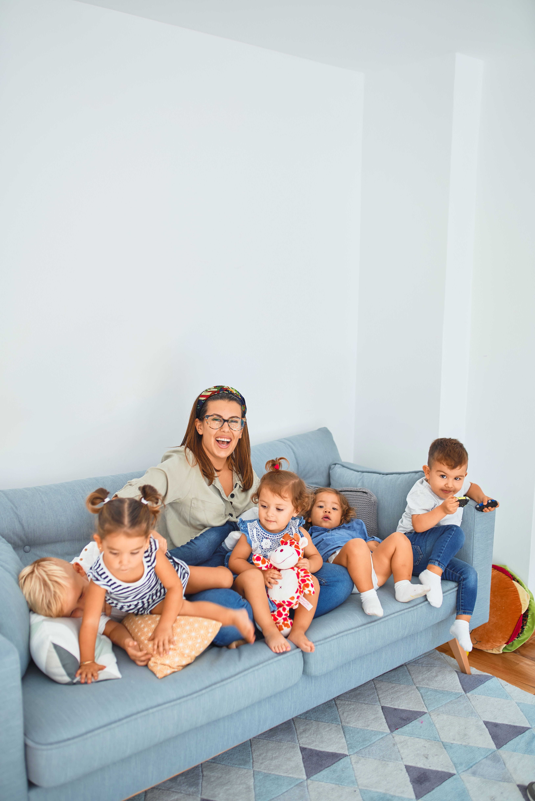

SALITA DE LACTANTES
Bebés de 3 a 12 meses

NOS CARACTERIZA
CONFIANZA
Compartimos experiencias de padres en constante comunicación con la institución, y disponemos cámaras sectorizadas para que puedas ver cómo trabajamos con los niños y niñas.
EXPERIENCIA
Docentes experimentadas en las diferentes etapas de los niños y niñas para cada salita.
CAPACITACIÓN CONSTANTE
Nos renovamos en conocimientos pedagógicos semestralmente para poder brindar el mejor servicio.
AUXILIARES ESPECIALIZADAS
Cada auxiliar está preparada para su tarea particular y apoyo a las actividades docentes.
QUE HACEMOS
Diseñamos la propuesta pedagógica-educativa pensando siempre en alcanzar el desarrollo integral de los/as niños/as, respetando y acompañando individualidades, necesidades, ritmos de aprendizajes, ofreciendo sostén y contención emocional tanto a cada niño/a como a las familias que integran nuestra comunidad educativa.
EL JUEGO
Todas y cada una de las experiencias que se llevan a cabo están atravesadas por el juego, el recurso de aprendizaje por excelencia de los/as niños/as.

SALITA DE 1
Niños de 12 a 24 meses
SALITA DE 2
Niños de 24 a 36 meses

SALITAS DE 3, 4 Y 5 años
Separadas por edades